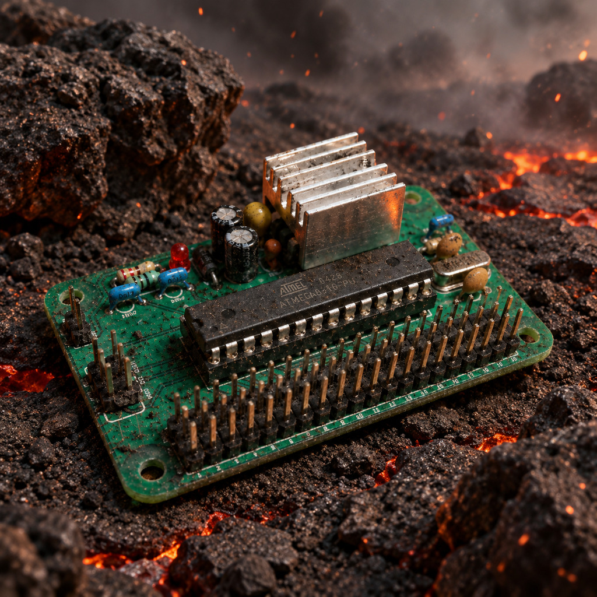
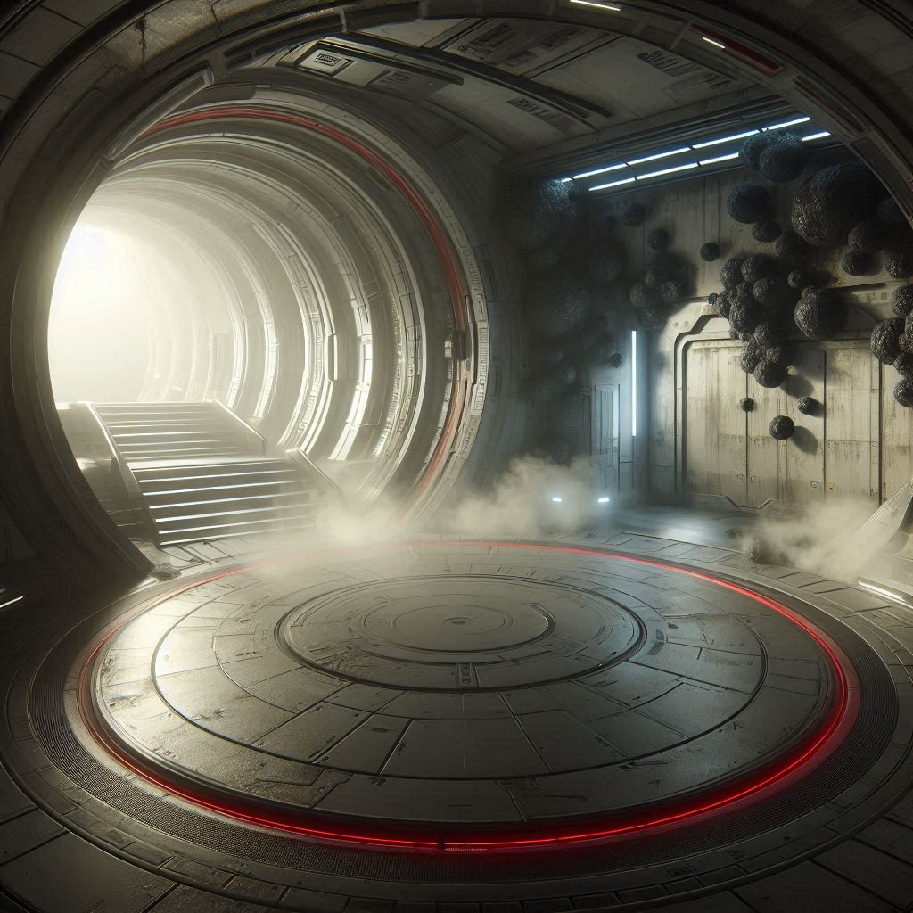
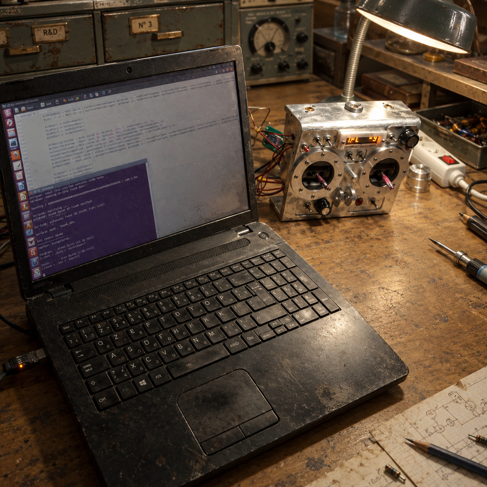
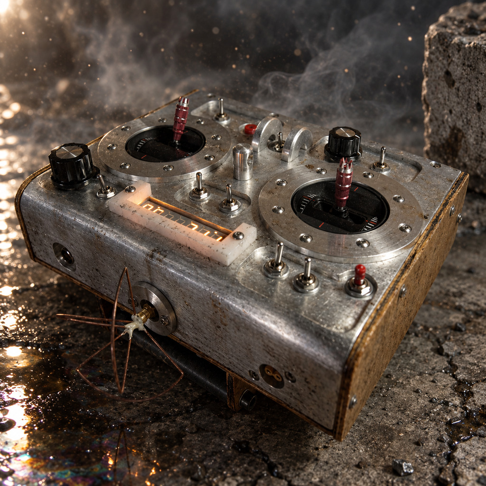

PRINTED CIRCUIT BOARD
PALC 20

•VIEW LIVE
TECHNOLOGY
CUSTOM HARDWARE
OVERVIEW
PALC 20 is a programmable arithmetic and logic controller for advanced processing capabilities, with 20 input ― output board-to-board interface.

HARDWARE FEATURES
― The PALC 20 supports 4 interchangeable MCU :
• ATmega48P
• ATmega88P
• ATmega168P
• ATmega328P
MCU features GPIO, interrupt, pin change interrupt, ADC, PWM, USART, SPI, and TWI integrated peripherals.
The board features 1 power supply port, 20 GPIO pins organized into 1 20-pin ports along with dedicated +5 V and GND connections for powering peripheral, and provides 1 ISP programming interface for firmware update.
A robust power supply support demanding power requirements, produces low noise, and accept wide input voltage range.
The board features 4 M3 mounting points.
PERFORMANCE
The PALC 20 designed for computationaly intensive and real-time embedded applications.
The board linear power supply provides wide input range +5 V to +26 V, low electrical noise, silent operation, and stable +5 V output voltage. It uses an LM2940 regulator to deliver 1 A continuously and providing additional capability for peak currents of up to 1.5 A.
The real-time computing handled by the MCU onboard operarting 16 million machine instructions per second at low power consumption.
RESULTS
The PALC 20 is designed for computationally intensive and real-time applications. This board provides vesatile hardware for a wide range of embedded systems.
The connectivity features extensive input ― output ports.
The fast and robust architecture of PALC 20 has proven its value in many projects.
CONTACT ME FOR MORE TECHNICAL INSIGHTS & DISCUSSION
Explore more ↓
(DISCOVER WHAT YOU'VE BEEN MISSING)
LABORATORY
R&E
Research and experiment site
HARDWARE - SOFTWARE

PROTOTYPE 001
TECHNOLOGY
Remote controller
CUSTOM HARDWARE - CUSTOM SOFTWARE
